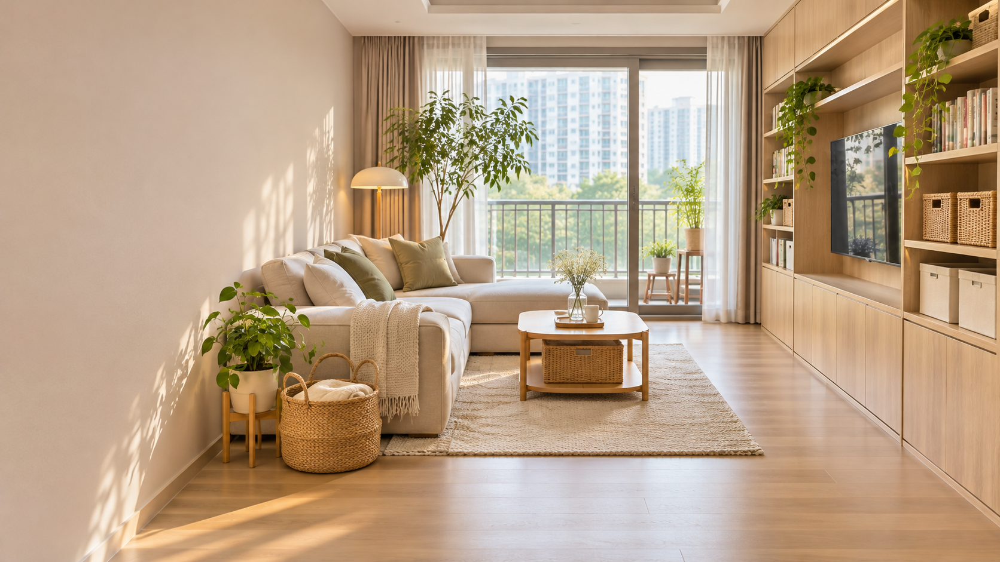

생활을 먼저 봅니다
무엇이 어디에서 불편한지 듣고, 실제 생활에 맞는 정리 방향을 찾습니다.
HOME ORGANIZING · SPACE FLOW
물건을 제자리에 두는 것부터, 집 안에서 더 편하게 움직이는 방법까지. 당신의 생활 방식에 맞춰 정리하고 수납합니다.

집의 크기와 가족의 생활 습관은 모두 다릅니다. 온결은 공간을 먼저 살펴보고, 자주 쓰는 물건과 불편한 순간을 기준으로 정리의 순서를 세웁니다.
보기 좋게 정돈하는 데서 끝나지 않고, 정리한 상태를 일상에서 이어갈 수 있도록 수납 위치와 이동 흐름까지 함께 고민합니다.
무엇이 어디에서 불편한지 듣고, 실제 생활에 맞는 정리 방향을 찾습니다.
물건의 사용 빈도와 크기를 고려해 꺼내고 되돌려 놓기 쉬운 자리를 만듭니다.
공간을 오가는 길과 자주 하는 행동을 살펴 더 편안한 동선을 제안합니다.
자주 쓰는 곳부터, 매일 반복되는 불편을 줄이는 방식으로 시작합니다.
자주 쓰는 조리 도구와 식재료가 손 닿는 곳에
사용 빈도와 계절에 따라 찾기 쉬운 수납으로
가족이 함께 쓰는 물건에 편안한 자리를
스스로 꺼내고 정리하는 습관을 돕는 배치로
공간과 필요한 범위를 먼저 확인하고, 알맞은 방식으로 진행합니다.
불편한 공간과 원하는 변화를 간단히 알려주세요.
현장을 살펴보고 공간의 상태와 생활 흐름을 확인합니다.
요청 범위에 맞춰 작업 내용과 비용을 안내합니다.
합의한 방향에 따라 정리하고 유지 방법을 알려드립니다.
현장과 요청 범위를 확인한 뒤 정확한 작업 내용과 비용을 안내합니다.
공간을 비우고 분류해, 사용하기 쉬운 수납 자리를 만듭니다.
정리와 함께 이동 흐름을 살피고, 공간 배치 방향을 시안으로 제안합니다.
※ 배치 시안은 정리 방향을 미리 살펴보기 위한 참고 이미지이며, 실제 공간과 결과는 현장 조건에 따라 달라질 수 있습니다.
정리가 필요한 공간과 가장 불편한 점을 알려주시면 방문 상담을 안내해 드립니다.
방문 상담 요청하기 ※ 시안용 이메일 주소입니다. 실제 상담 채널로 교체해 주세요.